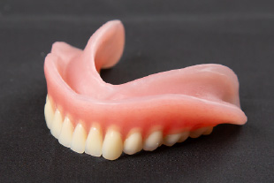
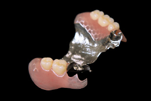
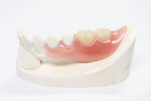

Dentures
歯を失ってしまったあと、そのままにしていませんか？
歯がないまま放置していると、周りの歯に大きな負荷がかかり、むし歯や歯周病にかかりやすくなります。また、かみ合わせがずれてしまうため身体のバランスが悪くなり、頭痛や腰痛を引き起こしたり、転倒しやすくなる可能性もあります。
そうならないために、当院では患者様に合わせた入れ歯・義歯を製作いたします。
義歯をしないと、どうなるの？
当院の入れ歯の特徴
入れ歯の種類
入れ歯の材質
| 種 類 | イメージ | 費用(税込) |
|
保険診療
レジン床義歯
歯ぐきに触れる部分がレジン（歯科用プラスチック）の入れ歯。
厚みがあるため食べ物の温度を感じにくく、違和感を覚えることがあります。保険が適用されるため安価で、ほとんどの症例に対応できます。 |

|
保険適用 |
|
自由診療
金属床義歯
歯ぐきに触れる部分が金属素材の入れ歯。金属の熱伝導で食べ物の温度を感じやすく、おいしく食べられます。また、強度があるため薄く作ることができ、違和感が少ないこともメリットです。
自由診療になりますが、耐久性に優れ、長くお使いいただけます。 |

|
〇〇円～ |
|
自由診療
ノンクラスプデンチャー
入れ歯を支える金属のバネをなくした入れ歯です。歯ぐきになじむピンク色の樹脂で固定するため、自然な見た目が得られます。
粘膜にあたる床部分を金属にすることも可能で、審美性と機能性に優れた入れ歯です。 自由診療になりますが、耐久性に優れ、長くお使いいただけます。 |

|
〇〇円～ |
入れ歯ができるまで
Make a Reservation
24時間受付中
| 診療時間 | 月 | 火 | 水 | 木 | 金 | 土 | 日 | 祝 |
|---|---|---|---|---|---|---|---|---|
| 10:00〜20:00 | 〇 | 〇 | 〇 | 〇 | 〇 | ▲ | ● | ※ |
▲：10:00〜18:00 ●：9:00〜13:00
※祝日はその曜日に準じて診療